IE Báo cáo máy
Cập nhật MACHINE DATABASE từ layout và costing, phân tích thiếu máy theo ngày, chuẩn bị máy chuyển mã hàng. Chạy trên Chrome hoặc Edge, không cần mạng, không gửi dữ liệu đi đâu.
1. Giới thiệu
Công cụ phục vụ ba việc chính, tương ứng với các tab ở đầu trang:
| Tab | Dùng để |
|---|---|
| Dữ liệu | Chọn MC Report, Master plan, thư mục layout, thư mục data của Layout Check, nhập họ tên. Có dấu ✓ khi đã nạp đủ. |
| Cập nhật CSDL | Quét layout, duyệt thay đổi, Lưu MACHINE DATABASE (thanh lưu chỉ hiện ở tab này). Số trên tab = mục cần duyệt. |
| Thiếu máy & chuẩn bị | Xếp hạng nguy cơ thiếu máy, chi tiết theo ngày, gửi IE Tech duyệt, chốt báo cáo, xuất Excel. |
| Thiếu máy còn lại | Máy còn thiếu sau khi IE Tech duyệt (bảng ngang, chọn nhóm máy/PU), hành động xử lý (thuê, mua, mượn, dời kế hoạch) ghi ngay dưới bảng của từng nhóm máy thiếu, thấy kết quả tức thì, và thẻ tổng hợp (mục 6). |
| Báo sai lệch | Thông báo của IE Tech. Số trên tab = thông báo chưa xử lý. |
| Nhật ký | Lịch sử thao tác chuẩn bị máy theo loại máy và theo chuyền. |
Quay về trang chủ: bấm Trang chủ ở góc trên bên phải. Đổi độ rộng cột: ở mọi bảng, kéo mép phải của tiêu đề cột để đổi độ rộng (chữ trong bảng tự xuống dòng); bấm đúp vào mép đó để trở về tự động.
Góc trên bên phải có ba nút vai trò (IE Báo cáo máy / IE Tech / Giám sát) và nút ngôn ngữ VI / EN. Vai trò IE Tech chỉ thấy màn hình “Duyệt chuẩn bị” (mục 5); vai trò Giám sát chỉ xem “Thiếu máy còn lại” (mục 6).
Các ảnh trong tài liệu dùng dữ liệu mẫu giả (mã hàng DMO26-…, chuyền A, B, K, J, D, E), không phải dữ liệu công ty.
2. Cài đặt một lần trong MC Report
- MACHINE DATABASE giữ nguyên là bảng
Table1. Không đổi tên. - Data > Get Data > From Other Sources > Blank Query > Advanced Editor, dán nội dung
PowerQuery\costing_query.pq, sửa 4 dòng cài đặt (PlanFile,CostingFile,Server,Database) > Done > đổi tên query thànhCOSTING PROPOSAL> Close & Load To… > Table > New worksheet > đổi tên sheet thànhCOSTING PROPOSAL. - Data > Get Data > Query Options > CURRENT WORKBOOK > Privacy > chọn “Ignore the Privacy Levels”.
- Lần làm mới đầu tiên: nhập tài khoản SQL (chọn Database, tài khoản đọc dữ liệu như macro costing); ở hộp thoại “Native database query” chọn Run.
Tùy chọn: PowerQuery\machinedb_latest_query.pq đọc MACHINE DATABASE từ file lưu mới nhất trong một thư mục cố định (xem mục 3, bước 4b).
MC Report dùng với công cụ cần các sheet: MACHINE DATABASE, MACHINE GROUP (bắt buộc); COSTING PROPOSAL (nếu thiếu thì bỏ qua costing); MACHINE BY LINE, MC STATUS, PU LIST (cho tab Thiếu máy & chuẩn bị).
3. Cập nhật MACHINE DATABASE (hằng tuần)
Trước khi bắt đầu: mở MC Report, Data > Refresh All > Save.
Bước 1: Dữ liệu đầu vào (tab Dữ liệu)
- Mở
IE_BaoCaoMay.htmlbằng Chrome hoặc Edge. - MC Report… (ghi nhớ): chọn file MC Report. Công cụ ghi nhớ file này cho các tuần sau.
- Chọn file Excel… (ghi nhớ): chọn Master plan mới của tuần, file tuần trước, CheckMc (có thể chọn cùng lúc nhiều file; công cụ tự nhận biết từng file qua tên sheet và ghi nhớ các file này). Nút “hoặc chọn file Excel… (không ghi nhớ)” dùng khi không cần ghi nhớ.
- Chọn thư mục layout… (ghi nhớ): thư mục gốc chứa layout (quét cả thư mục con; bỏ qua thư mục
Old layout,/old/,backup). Chrome hỏi “Upload” thì chọn Upload (dữ liệu chỉ đọc trên máy). “hoặc chọn kiểu cũ” là cách chọn không ghi nhớ. - Kết nối thư mục data của Layout Check… (không bắt buộc nhưng nên dùng): chọn thư mục
datadùng chung, bấm Cho phép (xem và sửa). Nhập Họ tên.

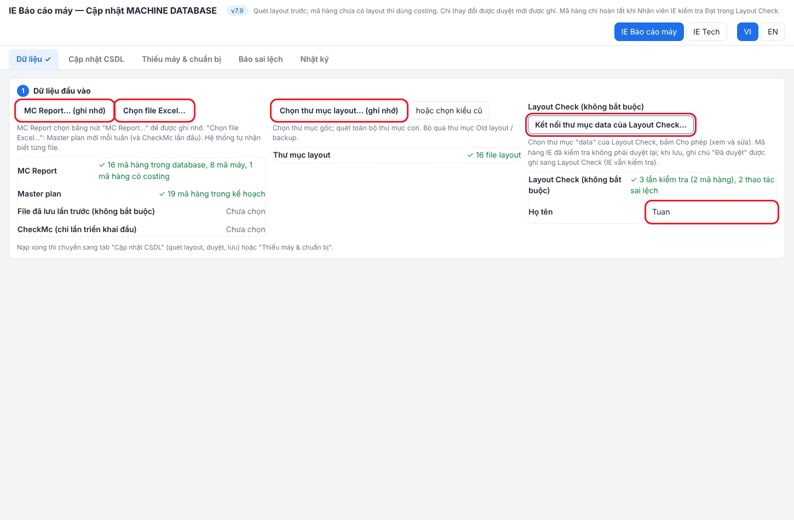
CheckMc.xlsm để so sánh với lần quét CheckMc gần nhất.Bước 2: Quét layout (tab Cập nhật CSDL)
Bấm Bắt đầu. Công cụ quét layout trước; mã hàng chưa có layout thì dùng costing. Thanh tiến độ hiện số file đã quét. Quét giống macro CheckMc (RunWeeklyIncrementalScan); file Man-Machine chỉ lấy Man-Machine-Ass/Prep; sheet ẩn và sheet có tên “F T S C” / “F-S-T-C” không được quét.
Bước 3: Duyệt và lưu
Kết quả quét chia thành các thẻ (bấm thẻ để xem):
| Thẻ | Ý nghĩa |
|---|---|
| Cần duyệt | Mã hàng có dữ liệu mới hoặc khác database; sắp xếp theo ngày vào chuyền. Nhãn: Mới, Layout thay đổi, Costing → Layout, Costing, Dữ liệu nhập tay, Theo Layout Check, Chờ sửa layout. |
| Còn thiếu dữ liệu | Mã hàng trong kế hoạch chưa có layout, chưa có costing và chưa có trong database. Cách xử lý ghi ở cột cuối. |
| Lỗi dữ liệu | Cần sửa tại nguồn (ví dụ mã máy chưa có trong MACHINE GROUP, dòng bị dán trùng trong database có thể đánh dấu để giữ một bản). |
| Không thay đổi | Layout trùng khớp database (so theo nhóm máy). |
| Đã xác nhận giữ | Mã hàng bạn đã chọn “Giữ dữ liệu hiện tại” và xác nhận (xem bên dưới). Thẻ chỉ hiện khi có mục đã xác nhận. |
| Đã kiểm tra (Layout Check) | Nhân viên IE đã Đạt/Chấp nhận, layout không đổi, CSDL đã khớp: không duyệt lại. |
| Nhật ký quét | Kết quả từng file. |

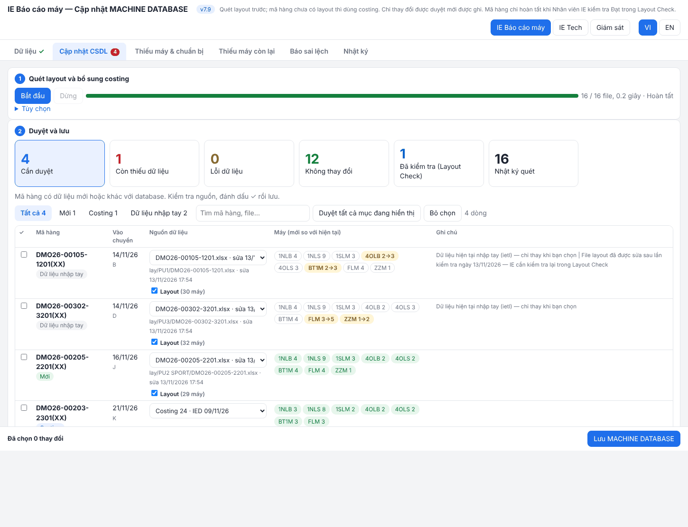
- Mỗi file layout là một lựa chọn, kèm ngày sửa file. Bên dưới là danh sách sheet có bảng máy (không gồm sheet ẩn): mặc định tích mọi sheet Man-Machine, nếu không thì sheet đầu tiên ghi mã hàng đó. Tích thêm/bỏ tích để cộng các sheet; số máy và so sánh cập nhật ngay.
- Đánh dấu ✓ từng dòng, hoặc bấm Duyệt tất cả mục đang hiển thị. Bỏ chọn để bỏ hết.
- Bộ lọc nhanh: Mới, Costing, Dữ liệu nhập tay, ô tìm mã hàng/file.

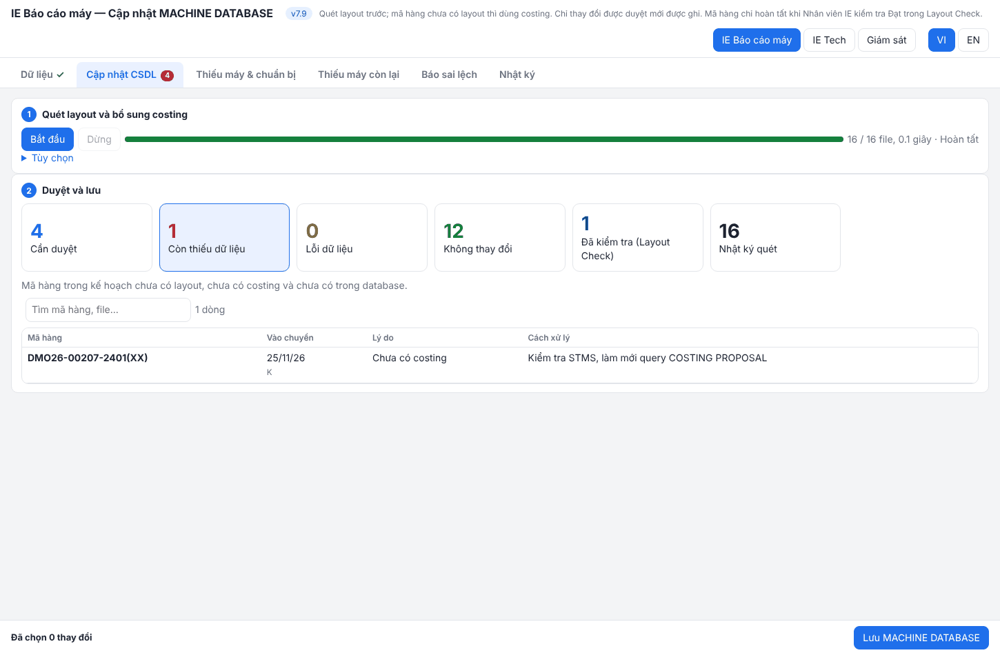

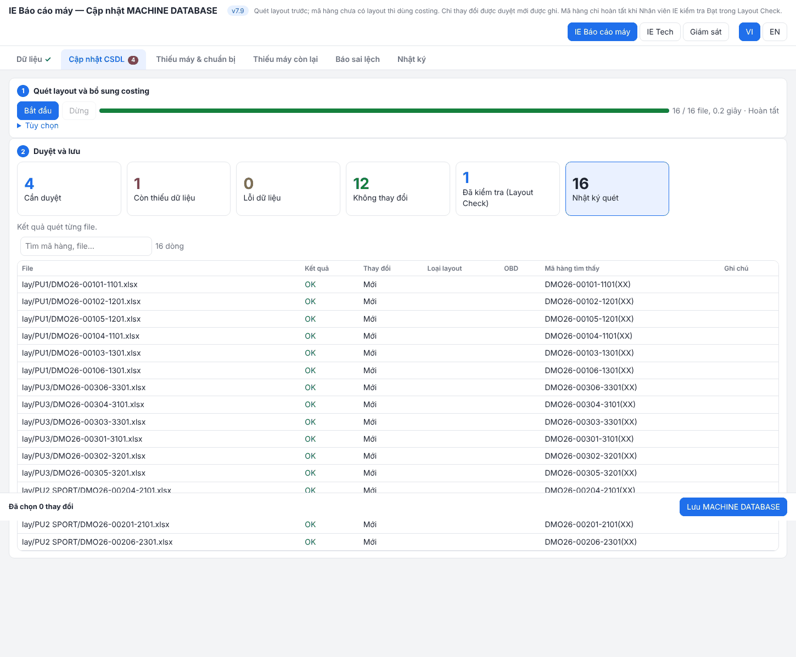
Khi đã chọn xong, bấm Lưu MACHINE DATABASE ở thanh dưới cùng. File lưu tên MACHINE_DATABASE_yyyymmdd_hhmm.xlsx.

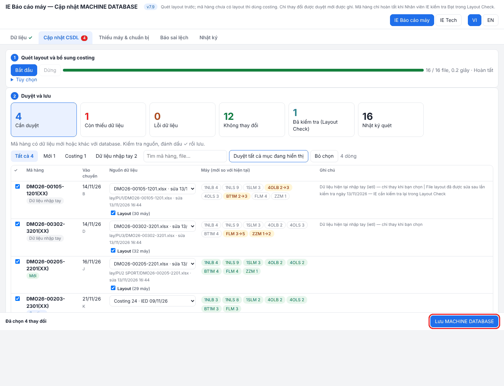

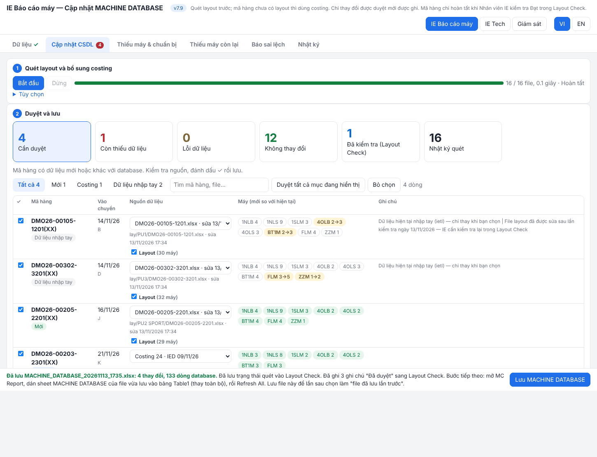
Giữ dữ liệu hiện tại và xác nhận giữ
Khi layout mới hoặc khác nhưng bạn muốn giữ nguyên database (ví dụ dữ liệu nhập tay do IE đã kiểm tra, hoặc layout chưa chốt), làm như sau:
- Ở cột Nguồn dữ liệu của mã hàng, chọn Giữ dữ liệu hiện tại (dòng cuối của danh sách).
- Tích ô ✓ ở đầu dòng. Thanh dưới hiện “1 xác nhận giữ” và nút Xác nhận giữ (1).
- Bấm Xác nhận giữ. Cũng có thể bấm Lưu MACHINE DATABASE: các mục đã tích giữ được ghi nhớ cùng lúc.

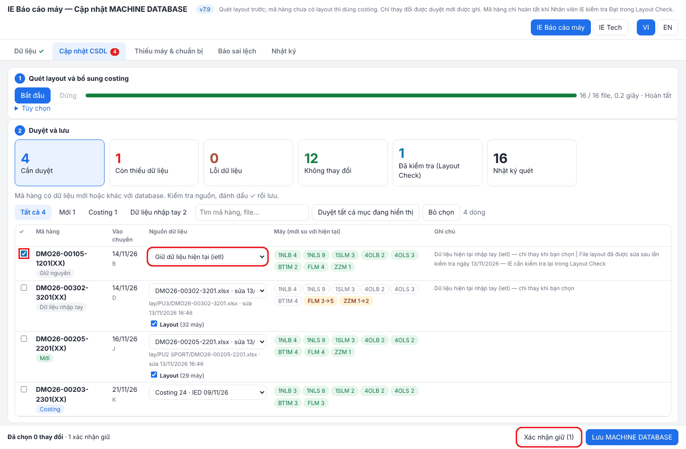
Mã hàng chuyển sang thẻ Đã xác nhận giữ và không hiện lại ở “Cần duyệt” trong các lần quét sau. Mã hàng chỉ hiện lại khi một trong hai thay đổi:
- Nội dung layout thay đổi (mã máy hoặc số lượng khác): ghi chú “Layout đã thay đổi sau khi … xác nhận giữ dữ liệu hiện tại”.
- Dữ liệu của mã hàng trong database thay đổi (ví dụ có người cập nhật số máy): ghi chú “Database đã thay đổi sau khi … xác nhận giữ dữ liệu hiện tại”.
Khi hiện lại, xác nhận cũ bị xóa; muốn giữ tiếp thì xác nhận lại. Chỉ lưu lại file, đổi ngày sửa hoặc định dạng layout thì không làm mã hàng hiện lại.

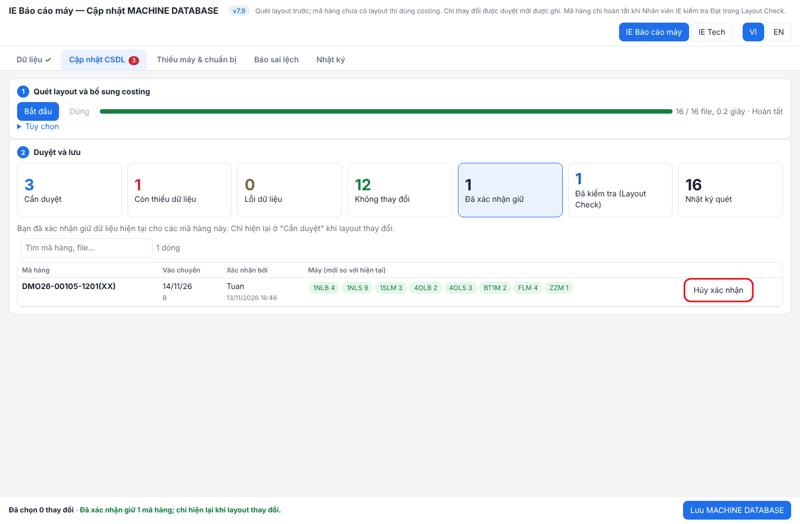
- Xác nhận được lưu trong
data\machinedb\keeps.json(dùng chung với những người cùng thư mục data). Nếu chưa kết nối thư mục data, xác nhận chỉ lưu trên trình duyệt của máy này. - Không xác nhận giữ được khi mã hàng chưa có dữ liệu hiện tại (mã hàng mới): ô ✓ bị khóa vì không có gì để giữ.
- “Duyệt tất cả mục đang hiển thị” không tự xác nhận giữ; phải tích từng mã hàng.
Thiếu máy dùng ngay thay đổi vừa duyệt
Sau khi bấm Lưu MACHINE DATABASE, tab Thiếu máy & chuẩn bị tính nhu cầu máy đã gồm các thay đổi vừa duyệt, không cần chờ dán vào Table1 và Refresh All. Dòng “Nhu cầu tính từ” ghi rõ: “gồm N thay đổi vừa duyệt (database trong MC Report chưa cập nhật)”.
- Bảng chi tiết đang mở bị xóa; bấm lại Mở chi tiết các nhóm đã chọn để thấy số mới.
- Đề xuất gửi IE Tech trong lúc đó ghi lại cơ sở tính; IE Tech thấy dòng “Đề xuất dựa trên database gồm N thay đổi vừa duyệt…” phía trên bảng.
- Vẫn phải dán vào
Table1và Refresh All (bước 4). Khi nạp lại MC Report đã cập nhật, dòng ghi chú tự biến mất và số liệu không đổi.
Bước 4: Đưa dữ liệu vào MC Report
Chọn một cách:
- Dán sheet
MACHINE DATABASEcủa file vừa lưu vào bảngTable1(thay toàn bộ dòng); hoặc - Khuyến nghị: lưu các file vào một thư mục cố định và dùng
machinedb_latest_query.pq.
Sau đó Refresh All trong MC Report. Giữ file vừa lưu (trạng thái quét cũng được ghi sang thư mục data nếu đã kết nối Layout Check).
4. Thiếu máy và chuẩn bị
Tab Thiếu máy & chuẩn bị cần MC Report có sheet MACHINE BY LINE, MC STATUS, PU LIST và đã nạp Master plan. Không cần quét layout trước. Chỉ tính ngày làm việc (không có Chủ nhật).
4.1 Xếp hạng nguy cơ thiếu
- Đặt Từ ngày, Số tuần, Cộng chung % (mặc định 10%). Mặc định chỉ hiện nhóm máy có thể thiếu; tích “Hiện tất cả nhóm” để xem hết.
- Máy có sẵn = cột “MC used for PDN” của sheet MC STATUS, cộng theo nhóm máy. Nhu cầu cao nhất = nhu cầu sản xuất theo ngày + mức cộng chung. Còn lại thấp nhất âm (đỏ) là nguy cơ thiếu.
- Tích chọn loại máy cần xem, nhập Tỷ lệ chuẩn bị % (mặc định BT1M 50%, các loại khác 0) và Số ngày (mặc định 3). Lưu tỷ lệ chuẩn bị để dùng chung cho mọi người.
- Bấm Mở chi tiết các nhóm đã chọn.

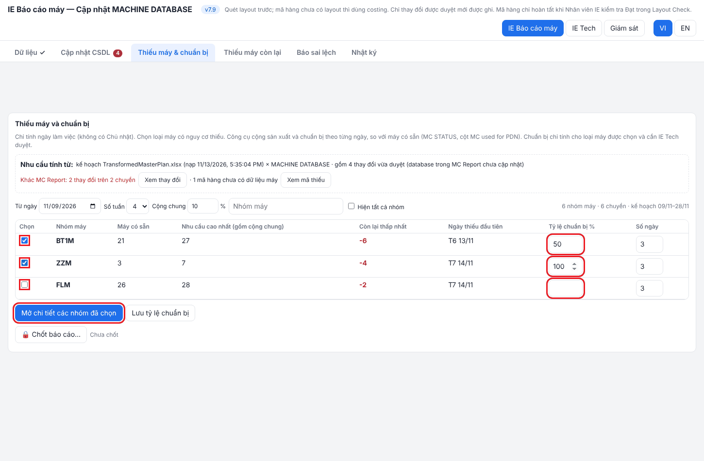
Chi tiết máy có sẵn: dưới dòng “Máy có sẵn” là từng cột theo công thức của MC STATUS: dấu + (Machine in house, RENT, BORROW) và dấu − (BROKEN, LENDING, TRA, PDC-Sample, Strapline, Line borrow, ATH transfer, PU3-Sample, PU2 keep…). Nếu công thức đổi, công cụ tự đọc lại dấu.
4.2 Chi tiết theo ngày

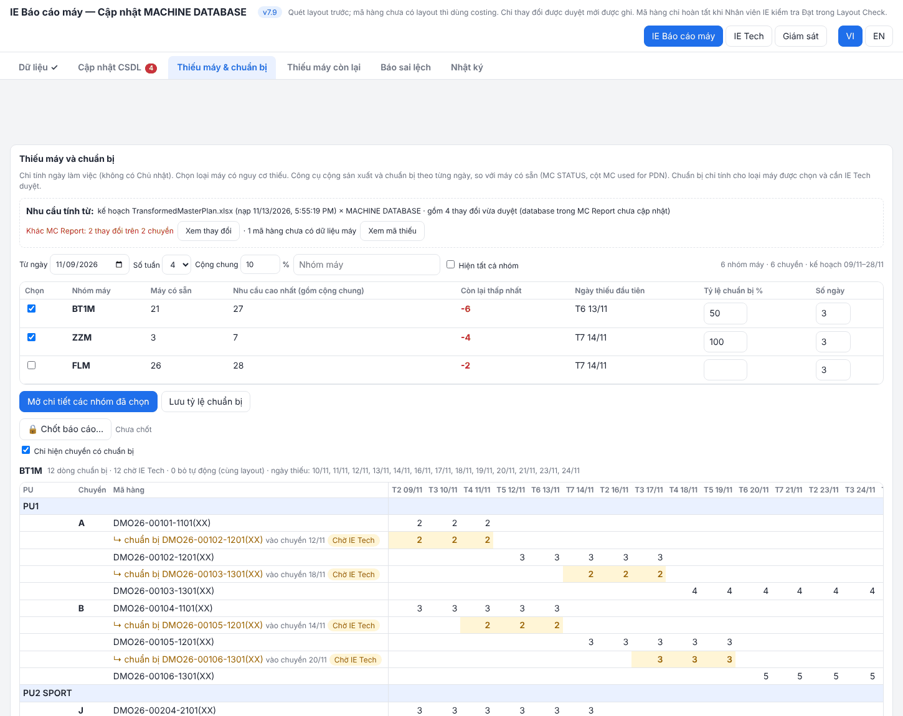
4.3 Quy tắc chuẩn bị
- Mã hàng mới vào chuyền (không chạy ở ngày làm việc trước) cần ROUNDUP(tỷ lệ × số máy của mã đó) trong N ngày làm việc trước ngày vào chuyền (bỏ Chủ nhật).
- Không chuẩn bị khi hai mã dùng chung một file layout, hoặc nằm trong danh sách “Cùng layout”, hoặc IE Tech bỏ.
- Ngày đầu tiên của kế hoạch không tính chuẩn bị (mã đang chạy). Chuyền làm Chủ nhật: Chủ nhật có sản xuất nhưng ngày chuẩn bị vẫn bỏ Chủ nhật. Mỗi lần đổi mã chỉ có một dòng chuẩn bị.
- Chuẩn bị chỉ tính cho loại máy được chọn.
4.4 Gửi IE Tech
Bấm Gửi IE Tech duyệt chuẩn bị: đề xuất được ghi vào data\prep\proposals. IE Tech chỉ thấy đề xuất mới nhất của mỗi loại máy.

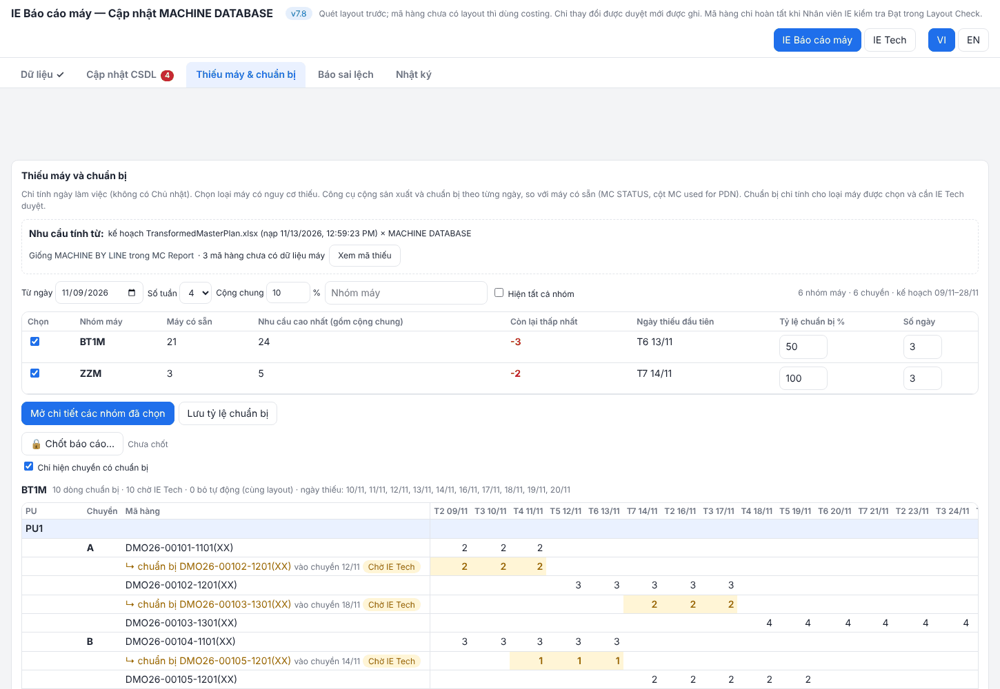
5. IE Tech: duyệt chuẩn bị
5.1 Kết nối
- Bấm nút vai trò IE Tech. Lần đầu: Chọn thư mục data… (thư mục
datadùng chung) và Chọn thư mục layout… (thư mục gốc chứa layout). Trình duyệt ghi nhớ hai thư mục này. Có thể nhập đường dẫn mạng của thư mục layout để mở file gốc bằng Excel. - Nhập Họ tên, chọn PU (lấy từ PU LIST và đề xuất đã gửi), nhập Chuyền phụ trách: gõ đầu mã chuyền, cách nhau dấu phẩy (
K= mọi chuyền K;K,J;K05). Để trống = tất cả chuyền.

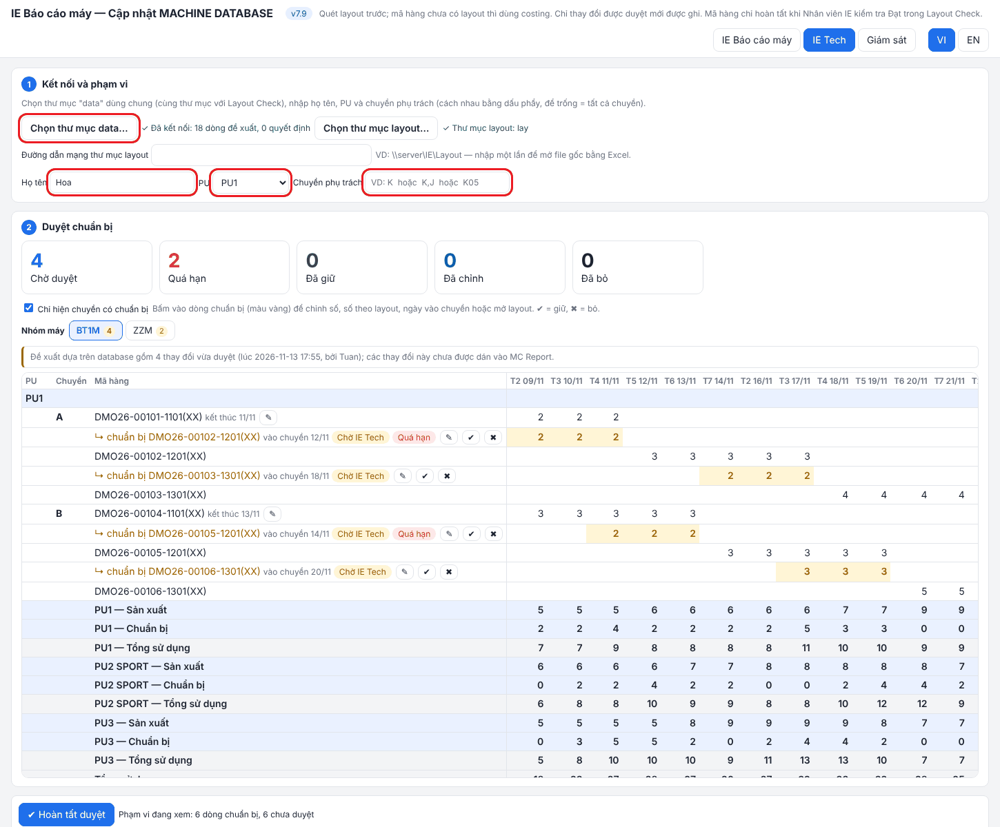
5.2 Duyệt từng dòng
Trên mỗi dòng chuẩn bị (màu vàng):
| Nút | Tác dụng |
|---|---|
| ✔ | Giữ (một lần bấm). |
| ✖ | Bỏ (một lần bấm, không cần lý do). |
| ✎ hoặc bấm vào dòng | Mở bảng bên phải để chỉnh. |

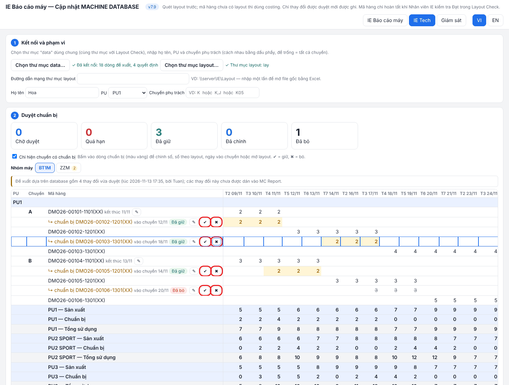
5.3 Bảng chỉnh bên phải

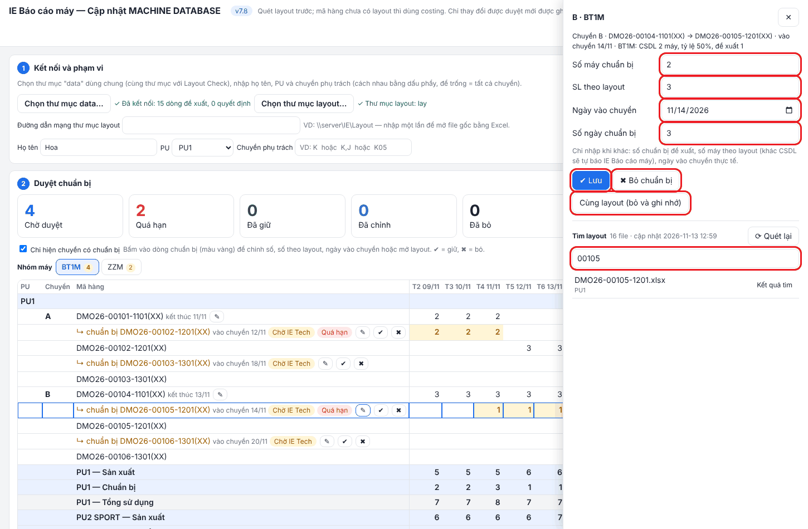
- Số máy chuẩn bị: số máy IE Tech quyết định.
- SL theo layout: nếu khác CSDL, số chuẩn bị tự tính lại theo số này và IE Báo cáo máy tự nhận thông báo ở tab Báo sai lệch.
- Ngày vào chuyền: ngày thực tế; ngày chuẩn bị tự lùi theo (N ngày làm việc trước, bỏ Chủ nhật) và sản xuất trên chuyền dời theo. Thẻ hiển thị “vào chuyền 15/11 → 18/11”. Dòng chưa duyệt được coi là “Giữ” khi chỉnh ngày.
- Số ngày chuẩn bị.
- Lưu, ✖ Bỏ chuẩn bị, Cùng layout (bỏ và ghi nhớ): ghi nhớ theo cặp mã hàng (mã trước → mã sau), áp dụng ngay cho mọi loại máy và mọi chuyền có cùng cặp mã; IE Báo cáo máy bấm “Mở chi tiết” sẽ đọc lại. Muốn chuẩn bị lại một dòng cụ thể: bấm Giữ hoặc Chỉnh trên dòng đó (ưu tiên hơn).
5.4 Tìm và xem layout
Ô Tìm layout (danh sách file của thư mục layout, nhớ 8 giờ; ⟳ Quét lại để cập nhật). Để trống = gợi ý theo tên file (Đúng mã hàng > Mã hàng không có size > Cùng article); gõ một phần tên để tìm. Bấm vào file để xem các máy thuộc nhóm đang xem (“Hiện tất cả máy của layout” để xem toàn bộ), mỗi sheet một cột, kèm ngày sửa file.

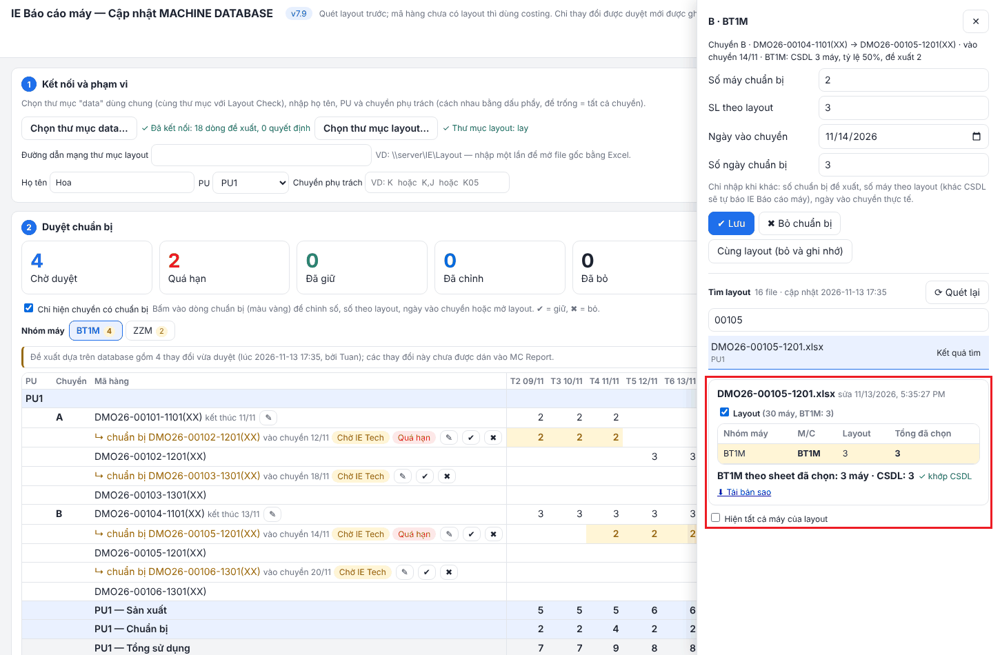
5.5 Sửa ngày kết thúc mã đang chạy
Ở dòng mã đang chạy của mỗi chuyền (mã chạy ở ngày đầu của bảng) có chữ “kết thúc dd/mm” và nút ✎. Bấm ✎ sẽ hiện hộp chọn ngày có lịch (giống ô ngày vào chuyền của dòng chuẩn bị): chọn ngày rồi bấm Lưu; bấm Theo kế hoạch (hoặc chọn đúng ngày kế hoạch) để về lại kế hoạch. Mã đang chạy dừng sau ngày đó (nếu muộn hơn kế hoạch thì chạy tiếp với số máy cuối); mã kế tiếp vào chuyền ngày làm việc liền sau, chuẩn bị dời theo; áp dụng cho mọi loại máy của chuyền.
5.6 Hoàn tất duyệt
Khi duyệt xong phạm vi đang xem (PU, chuyền phụ trách, tất cả nhóm máy), bấm ✔ Hoàn tất duyệt. Nếu còn dòng chưa duyệt, hệ thống cảnh báo số dòng và số chuyền; vẫn có thể hoàn tất (các dòng đó giữ số đề xuất). Có thể hoàn tất lại sau khi duyệt thêm.

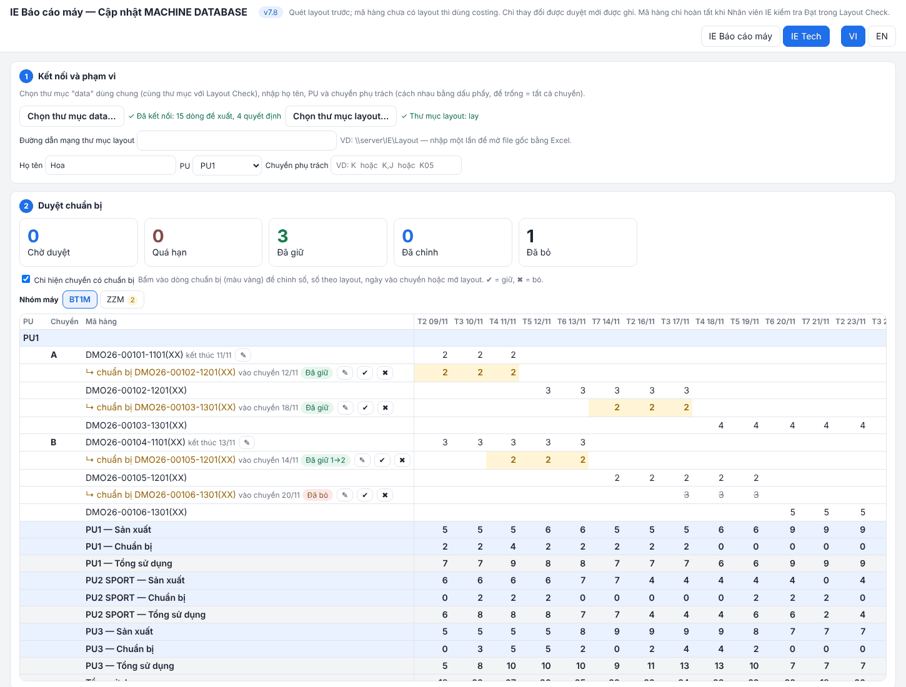
6. Thiếu máy còn lại, hành động
Sau khi IE Tech duyệt, nhóm máy nào vẫn còn thiếu thì cần quyết định thuê, mua, mượn hoặc dời kế hoạch với PPC. Màn hình này tập hợp số liệu cho người quyết định (Giám sát) và cho IE Báo cáo máy ghi lại hành động.
6.1 Mở màn hình
- IE Báo cáo máy: tab Thiếu máy còn lại (cần đã kết nối thư mục data; số trên tab = số nhóm máy còn thiếu).
- Giám sát (chỉ xem): bấm vai trò Giám sát → Chọn thư mục data… (hoặc “🔁 Dùng lại”) → chọn thư mục
datadùng chung. Không cần MC Report hay Master plan.
Số liệu lấy từ đề xuất mới nhất của từng nhóm máy và quyết định của IE Tech, bằng đúng cách tính của bảng IE Tech. Bấm Làm mới để đọc lại khi có người vừa lưu.
6.2 Xem số liệu: bảng ngang theo ngày

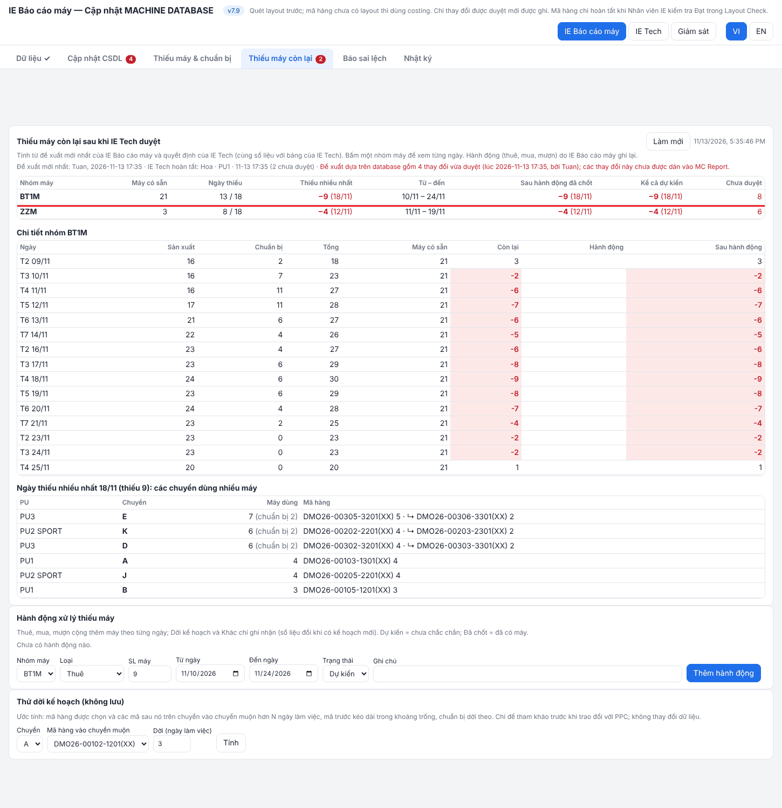
- Chọn nhóm máy và PU: bấm một nhóm máy (hoặc PU) để chỉ xem nhóm đó; bấm thêm để thêm hoặc bỏ; Tất cả nhóm máy / Tất cả PU để bỏ lọc. Bấm một dòng ở bảng tóm tắt cũng chọn nhóm máy đó. Chọn PU chỉ lọc các dòng PU; “Máy có sẵn” và “Còn lại” luôn tính cho cả nhóm máy (số máy có sẵn không chia theo PU).
- Chỉ ngày thiếu (mặc định): mỗi nhóm máy hiện từ ngày thiếu đầu tiên đến ngày thiếu cuối cùng. Nếu giữa hai đợt thiếu có một đợt đủ máy thì các ngày đủ máy ở giữa vẫn được hiện. Cả kế hoạch: hiện toàn bộ các ngày của đề xuất.
- Các dòng của mỗi nhóm máy: Sản xuất / Chuẩn bị / Tổng theo từng PU, Tổng sử dụng, Máy có sẵn, Còn lại (hiện tại), các hàng hành động, rồi Còn lại sau hành động đã chốt và Còn lại kể cả dự kiến (hai dòng sau chỉ hiện khi đã có hành động).
- Xem chuyền và mã hàng của từng PU: bấm vào dòng PU (dấu ▸) để hiện các chuyền và mã hàng của PU đó, giống bảng của IE Tech: mỗi mã hàng một dòng với số máy theo ngày, kèm các dòng “chuẩn bị”. Nút Hiện tất cả mã hàng mở mọi PU của nhóm máy. Nút ⬇ Xuất Excel trên mỗi nhóm máy lưu bảng đó thành file Excel có định dạng (tiêu đề, cố định cột/dòng đầu, ô thiếu máy nền đỏ nhạt, các dòng mã hàng gom nhóm thu gọn được) và công thức (Sản xuất = tổng các mã hàng, Tổng PU, Tổng sử dụng, Còn lại = Máy có sẵn − Tổng sử dụng, Còn lại sau hành động…), nên khi sửa số trong Excel các dòng tổng tự tính lại. Nội dung: toàn bộ kế hoạch, mọi PU, chuyền, mã hàng, khu vực, hành động.
- Khu vực đang giữ máy: dưới dòng “Còn lại (hiện tại)” là các khu vực lấy máy khỏi sản xuất theo MC STATUS (ví dụ cho mượn / lending, hỏng, TRA, phòng mẫu): mỗi khu vực một dòng với số máy đang giữ (số này đã được trừ khỏi “Máy có sẵn”). Bấm ↩ Thu hồi ở dòng khu vực để mở khung hành động với loại “Thu hồi từ khu vực”.
- Số máy âm (thiếu) có nền đỏ nhạt và chữ đỏ để dễ nhận biết; cách hiển thị này cũng áp dụng cho dòng “Còn lại” trong bảng của IE Tech.

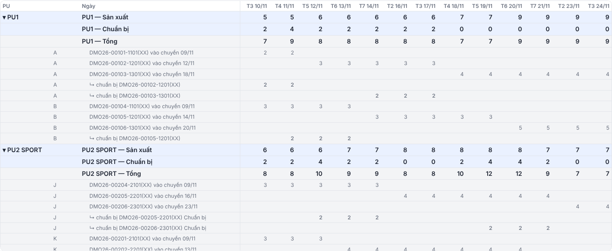
| Cột của bảng tóm tắt | Ý nghĩa |
|---|---|
| Ngày thiếu | Số ngày làm việc có “Còn lại” < 0 trên tổng số ngày của đề xuất. |
| Thiếu nhiều nhất | Số máy thiếu ở ngày tệ nhất (kèm ngày). Từ – đến: ngày thiếu đầu tiên và cuối cùng. |
| Sau hành động đã chốt | Thiếu còn lại nếu chỉ tính các hành động đã chốt. |
| Kể cả dự kiến | Thiếu còn lại nếu tính cả hành động dự kiến. |
| Chưa duyệt | Số dòng chuẩn bị IE Tech chưa duyệt (số liệu có thể còn đổi). |
6.3 Hành động: mỗi nhóm máy thiếu có khung riêng, kết quả hiện ngay
Dưới bảng của mỗi nhóm máy còn thiếu có một khung Hành động cho <nhóm máy>. Chỉ cần chọn loại và nhập số máy hoặc ngày, các dòng “Xem thử” trong bảng phía trên và dòng “Kết quả ngay” (thiếu nhiều nhất và số ngày thiếu, trước → sau) cập nhật tức thì, chưa lưu gì. Chưa nhập gì thì bảng không có dòng xem thử. Chỉ IE Báo cáo máy có nút Thêm hành động (nhập Họ tên ở tab Dữ liệu trước); Giám sát vẫn thử được nhưng không lưu được.

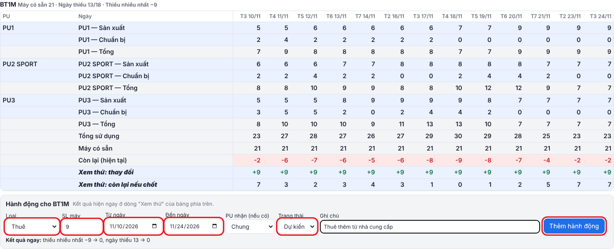
| Loại | Tác dụng lên số liệu |
|---|---|
| Thuê, Mua, Mượn | Cộng thêm số máy của nhóm máy trong khoảng ngày đã nhập (tự điền theo mức thiếu lớn nhất và khoảng ngày thiếu). Có thể ghi PU nhận (không bắt buộc) để thẻ tổng hợp hiện theo PU. |
| Thu hồi từ khu vực | Chọn khu vực (số máy đang giữ ghi trong ngoặc), số máy thu hồi (không vượt quá số máy khu vực đang giữ) và khoảng ngày: số máy này được cộng vào “Còn lại” trong khoảng ngày đó, dòng khu vực giảm tương ứng (khi đã chốt). Tên khu vực được ghi trong hành động và thẻ tổng hợp. |
| Dời kế hoạch | Chọn chuyền, mã hàng và ngày vào chuyền mới (ngày chủ nhật tự chuyển sang ngày làm việc; khung ghi “+n ngày làm việc”). Cả chuyền dời theo: mã hàng đó và mọi mã sau nó vào chuyền muộn hơn; mã trước vẫn chạy tiếp; chuẩn bị dời theo. Tác dụng thật lên mọi nhóm máy có chuyền đó; kết quả ngay cho biết các nhóm máy khác bị thay đổi bao nhiêu. |
| Khác | Ghi chú bắt buộc. Nếu nhập số máy (+ hoặc −) và khoảng ngày thì cộng/trừ máy như trên; nếu không thì chỉ ghi nhận. |

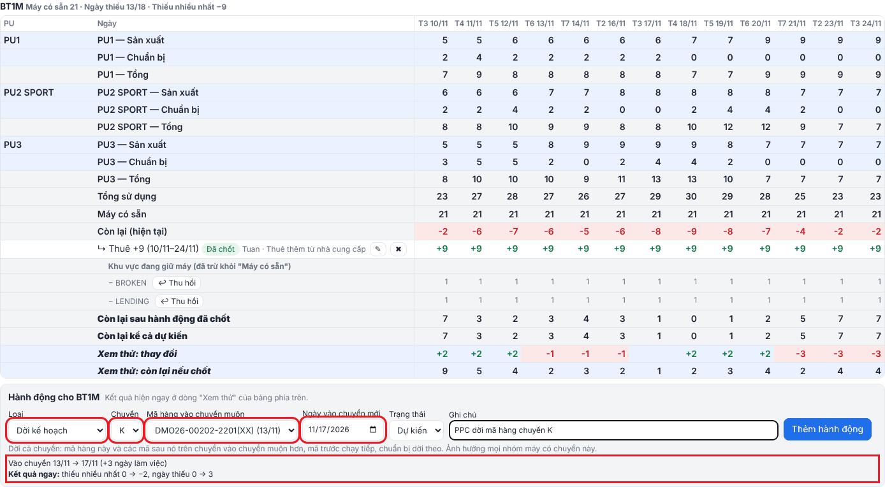
- Dự kiến = chưa chắc chắn; Đã chốt = đã có máy / PPC đã đồng ý dời. Hai trạng thái được tính ở hai dòng riêng (“sau hành động đã chốt” và “kể cả dự kiến”).
- Mỗi hành động là một hàng trong bảng ngang, hiện số thay đổi thực tế từng ngày. Nút ✎ sửa, ✔ chốt (Dự kiến → Đã chốt), ✖ hủy (hàng bị gạch, không còn tác dụng).
- Dời kế hoạch đã vào kế hoạch mới: khi MC Report / Master plan mới đã cho mã hàng vào chuyền đúng hoặc sau ngày mới, hành động được gắn nhãn “Đã vào kế hoạch” và không tính nữa (tránh dời hai lần).
- Mỗi lần thay đổi ghi thành một file trong
data\prep\actions, đồng thời hiện ở tab Nhật ký (loại “Hành động thiếu máy”).
6.4 Thẻ tổng hợp hành động
Khi mọi hành động đã được chốt (không còn hành động Dự kiến) và có ít nhất một hành động, màn hình tự tạo thẻ Tổng hợp hành động xử lý thiếu máy: bốn ô chỉ số (nhóm máy đủ máy, nhóm cần IE kiểm tra thêm, số hành động đã chốt, máy-ngày thiếu trước → sau), và một thẻ cho mỗi nhóm máy (thiếu trước → sau, thanh tiến độ, danh sách hành động). Thiếu theo PU nằm ngay trong thẻ của nhóm máy: mỗi PU hiện số máy dùng ngày tệ nhất, tỷ trọng và trạng thái; bấm vào một PU để xem chuyền, mã hàng, số máy sản xuất/chuẩn bị ngày đó, số máy theo từng ngày thiếu và các hành động của PU (bấm lần nữa để đóng). Nhóm máy hoặc PU không có hành động mà vẫn còn thiếu ghi “IE kiểm tra thêm”; nhóm máy sau hành động vẫn thiếu ghi “Còn thiếu −x: IE kiểm tra thêm”. Nút Xuất Excel lưu thẻ thành file.

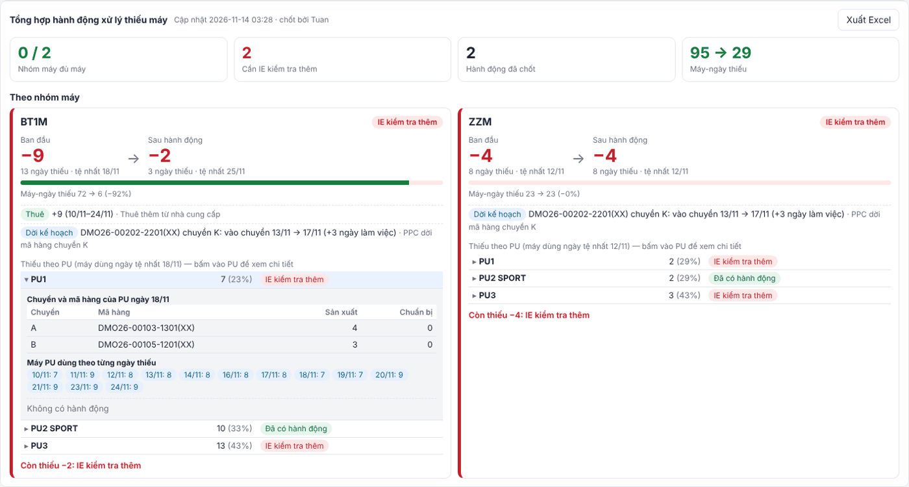
6.5 Vai trò Giám sát

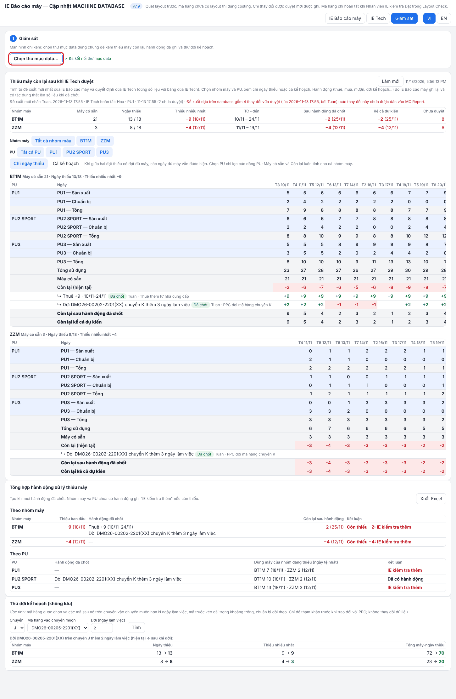
7. Chốt báo cáo, xuất Excel
Quay về vai trò IE Báo cáo máy, tab Thiếu máy & chuẩn bị, bấm Mở chi tiết các nhóm đã chọn để thấy quyết định của IE Tech (nhãn Đã giữ, Đã chỉnh 1→2, Đã bỏ, theo SL layout, “ngày do IE Tech chỉnh”).

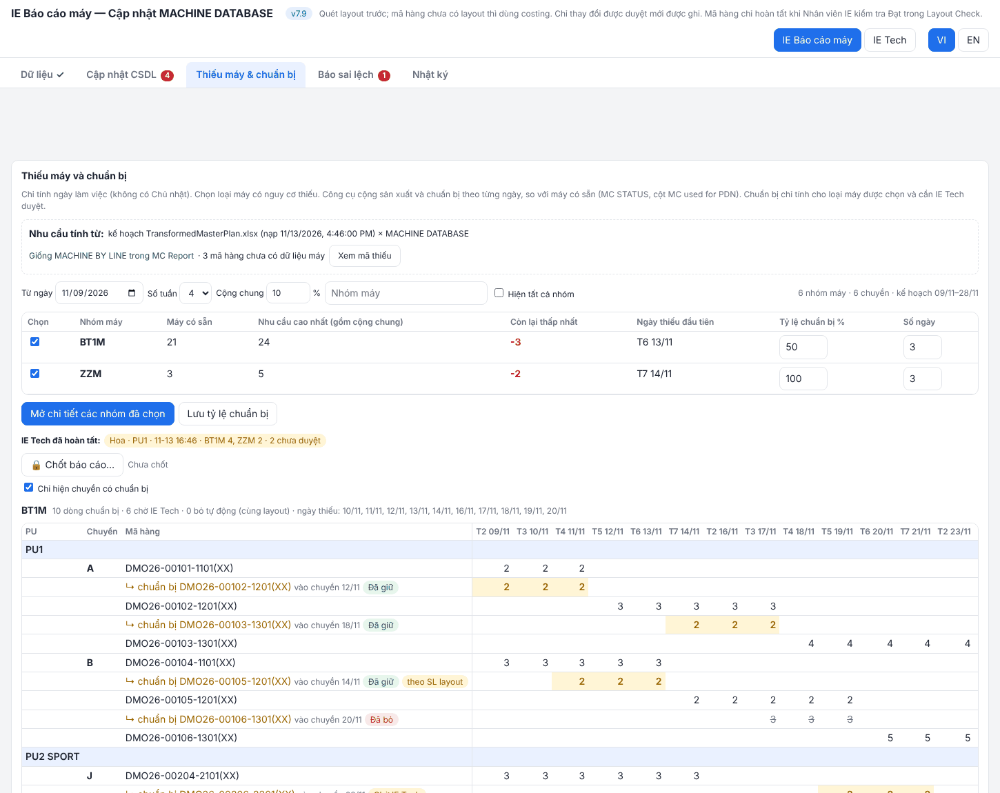
Chốt báo cáo
Điều kiện: đã kết nối thư mục data ở tab Dữ liệu và đã nhập họ tên.
- Bấm 🔒 Chốt báo cáo…. Bảng theo từng PU gồm: số dòng chuẩn bị, chưa duyệt, Giữ / Chỉnh / Bỏ, IE Tech hoàn tất (ai, lúc nào), sai lệch chưa xử lý. Làm mới để đọc lại.
- Dòng đỏ cuối bảng cho biết còn tồn: dòng chưa duyệt, sai lệch chưa xử lý, PU chưa hoàn tất.
- Nhập ghi chú (không bắt buộc), bấm 🔒 Chốt báo cáo. Nếu còn tồn, hệ thống cảnh báo; vẫn có thể chốt.

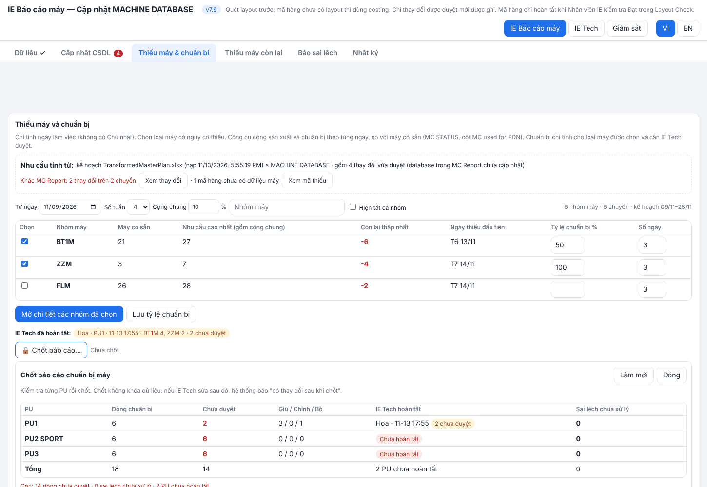

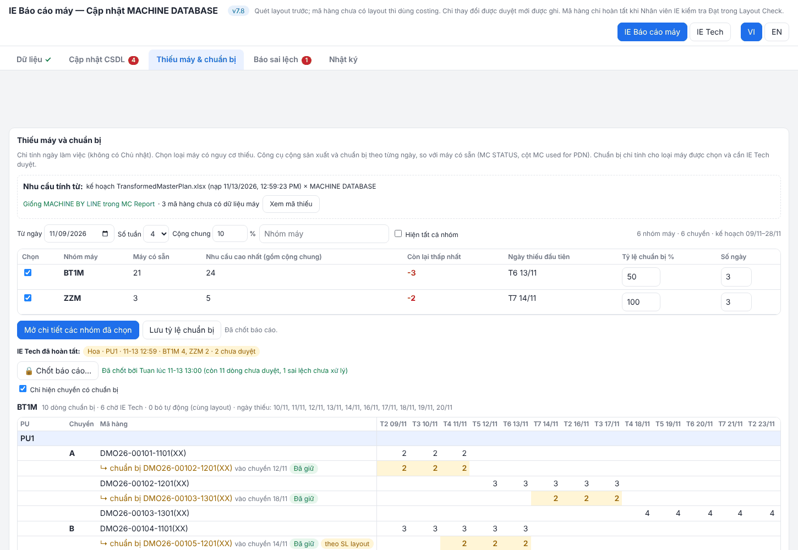
- Chốt không khóa dữ liệu. Nếu IE Tech hoặc IE Báo cáo máy thay đổi sau đó, dòng hiển thị “có N thay đổi sau khi chốt”; khi đó chốt lại.
- Bản ghi chốt lưu trong
data\prep\closed.
Xuất Excel
Bấm Xuất Excel (sau “Mở chi tiết”): mỗi loại máy một sheet có tô màu như sheet chi tiết hiện tại; sheet PREP BY PU đúng dạng TTL DEMAND BY PU (Combine.MACHINE | PU | ngày) để cộng vào báo cáo; sheet CHƯA DUYỆT liệt kê các dòng IE Tech chưa duyệt; sheet TRẠNG THÁI (người chốt, thời điểm, ghi chú, bảng theo PU). Tên file có CHOT (PREP_DEMAND_CHOT_…) chỉ khi đã chốt và chưa có thay đổi sau đó. Dòng chuẩn bị bị bỏ được xuất là 0.
8. Báo sai lệch và Nhật ký
Báo sai lệch từ IE Tech
Khi IE Tech nhập “SL theo layout” khác CSDL, thông báo hiện ở tab Báo sai lệch. Kiểm tra layout, sửa CSDL ở bước 3 nếu đúng, sau đó bấm Đã sửa CSDL hoặc Không đúng. Khi CSDL đã khớp số của IE Tech, cột trạng thái tự báo “CSDL đã khớp”. IE Tech xem kết quả ở bảng “Báo sai lệch tôi đã gửi”.

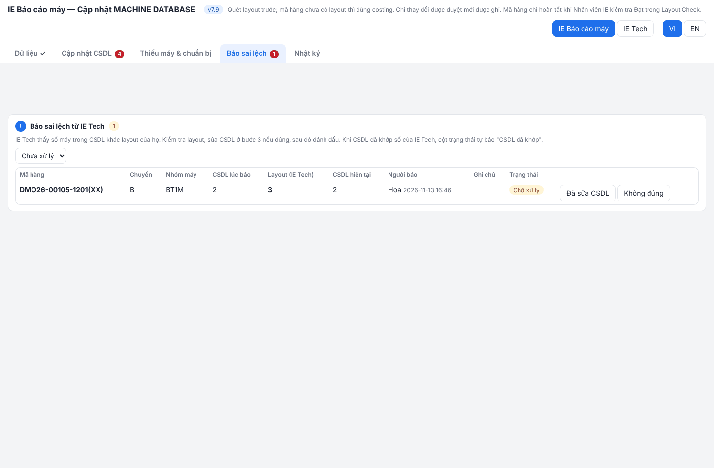
Nhật ký
Nội dung: đề xuất đã gửi, quyết định của IE Tech (Giữ, Chỉnh, Bỏ, Cùng layout, đổi ngày vào chuyền, số ngày chuẩn bị, SL theo layout, sửa ngày kết thúc), báo sai lệch và trả lời, hoàn tất duyệt, chốt báo cáo, duyệt CSDL. Cần kết nối thư mục data; bấm “⟳” để đọc lại.

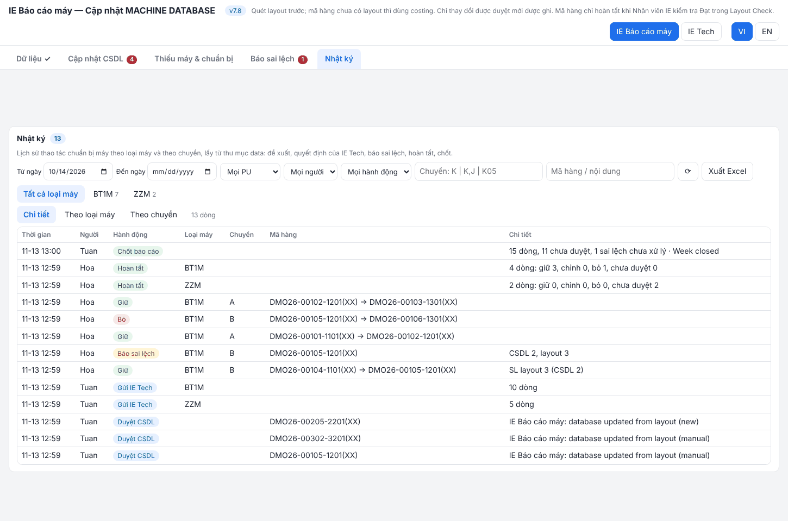
- Lọc: Từ ngày / Đến ngày (mặc định 30 ngày gần nhất), PU, người, hành động, chuyền, mã hàng hoặc nội dung; nút loại máy ở trên chỉ hiện loại máy đó.
- Ba cách xem: Chi tiết, Theo loại máy, Theo chuyền (đếm Giữ, Chỉnh, Bỏ, Cùng layout, Báo sai lệch, Hoàn tất và thao tác gần nhất; bấm một dòng để xem chi tiết).
- Xuất Excel: ba sheet NHẬT KÝ, THEO LOẠI MÁY, THEO CHUYỀN theo bộ lọc đang chọn.
9. Quy tắc
| Chủ đề | Quy tắc |
|---|---|
| Thứ tự nguồn | Layout trước. Không có layout thì dùng costing (chỉ cho mã hàng chưa có layout và chưa có dữ liệu). Dữ liệu nhập tay (REMARK IETL, SMS, PDF, tt, E) chỉ được thay khi người duyệt chọn. |
| Mã hàng | Đọc từ ô B3, D3, D4 (layout thường), B11 (Man-Machine), sau đó tên file. Mã ghép được tách: 3801.3802.3803, 3801-3803, 3901.04, 00115_116_117, xuống dòng. Mã khách hàng đặc biệt (SP…, S2xxx, F2xxx, DS…) giữ nguyên như khi ghi. |
| Biến thể 48HC / 16HC / ln | Lấy từ chữ “48HC”/“16HC” trong layout, tên file, thư mục; nếu không có thì theo kế hoạch (có ghi chú để kiểm tra). Chỉ chuyền D chạy 48HC. |
| Nhiều layout cho một mã | Bulk/Final > Initial, rồi OBD cao hơn, rồi file mới hơn. |
| Costing | Hệ số 48 cho mã có hậu tố 48HC, còn lại 24; công đoạn 31–97, 100, 103, 116; làm tròn: phần thập phân ≤ 0,20 xuống, ngược lại lên, tối thiểu 1. |
| So sánh layout – CSDL | Theo nhóm máy (nhóm lấy từ sheet MACHINE GROUP): tổng số máy mỗi nhóm bằng nhau là khớp; khác mã máy trong cùng nhóm không tạo đề xuất và không làm mất “Đã kiểm tra”. Mã máy chưa có nhóm được so sánh riêng. |
| Dữ liệu CSDL | Chỉ dùng các dòng có ngày mới nhất của mỗi mã hàng. |
| Quyết định mới nhất có hiệu lực | Công cụ đọc lại đúng file và sheet của bản ghi Layout Check: máy trong file = bản ghi và CSDL = bản ghi → “Đã kiểm tra”; file đã được sửa sau lần kiểm tra → “Cần duyệt”, IE kiểm tra lại; file khác file IE đã kiểm tra → “Lỗi dữ liệu: File layout khác file IE đã kiểm tra”. |
| Thiếu máy còn lại | Tính bằng đúng cách tính của bảng IE Tech (đề xuất mới nhất của từng nhóm máy + quyết định IE Tech). Hành động Thuê/Mua/Mượn (và Khác có nhập số máy) cộng máy theo ngày, Dời kế hoạch dời cả chuyền từ mã hàng đã chọn (Đã chốt và Dự kiến tính riêng; dời đã vào kế hoạch mới thì không tính nữa); mỗi nhóm máy thiếu có khung hành động riêng với kết quả hiện ngay; chỉ IE Báo cáo máy ghi hành động, Giám sát chỉ thử. Thẻ tổng hợp tạo khi mọi hành động đã chốt. |
| Số liệu ngay sau khi lưu | Báo cáo thiếu máy tính cả các thay đổi vừa duyệt (có nhãn), dù MC Report chưa cập nhật. |
| Mã băm | File Hash (SHA-256 cả file): giống lần trước thì bỏ qua. Content Hash (chỉ máy và số lượng): đổi định dạng, ghi chú, tên sheet, ô mã hàng không tính là thay đổi. |
10. File lưu và thư mục data
File MACHINE_DATABASE_yyyymmdd_hhmm.xlsx gồm các sheet:
| Sheet | Nội dung |
|---|---|
MACHINE DATABASE | Toàn bộ database sau khi áp dụng thay đổi đã duyệt (dán vào Table1). |
CHANGES | Nhật ký thay đổi (cũ, mới, nguồn, file, ngày duyệt). |
EXCEPTIONS | Lỗi dữ liệu và mã hàng còn thiếu. |
LAYOUT DATA, NEW CHANGED, SCAN STATE | Dữ liệu layout hiện hành, file mới/thay đổi trong lần chạy, trạng thái quét. |
Thư mục data dùng chung với Layout Check: machinedb\scanstate.json (mã băm từng file layout), validations\*.json (quyết định của Layout Check), approvals\*.json (ghi chú “Đã duyệt”, không tính là kiểm tra), prep\ (proposals, reviews, shared, notices, noticeres, complete, closed, lineends, actions, rules.json), machinedb\keeps.json (xác nhận giữ).
11. Lỗi thường gặp
| Hiện tượng | Cách xử lý |
|---|---|
| “MC Report cần sheet MACHINE DATABASE và MACHINE GROUP” | Chọn đúng file MC Report; kiểm tra tên sheet. |
| “không có sheet COSTING PROPOSAL (bỏ qua costing)” | Thêm query COSTING PROPOSAL (mục 2) nếu cần costing. |
| “Mã máy chưa có trong MACHINE GROUP” | Thêm mã máy vào sheet MACHINE GROUP rồi quét lại. |
| Tab Thiếu máy báo thiếu dữ liệu | MC Report cần có MACHINE BY LINE, MC STATUS, PU LIST và đã nạp Master plan. |
| IE Tech không thấy PU / dòng chuẩn bị | Kiểm tra đã kết nối đúng thư mục data, PU có trong PU LIST (tên giống Linemapping.xlsx), IE Báo cáo máy đã “Gửi IE Tech”. |
| Trình duyệt hỏi lại quyền thư mục | Bấm “🔁 Kết nối lại” hoặc Cho phép / Allow. |
| Sau khi cập nhật phiên bản trang web, giao diện cũ | Nhấn Ctrl+F5. Lần đầu mở bằng địa chỉ mới, chọn lại các thư mục (trình duyệt ghi nhớ theo địa chỉ trang). |